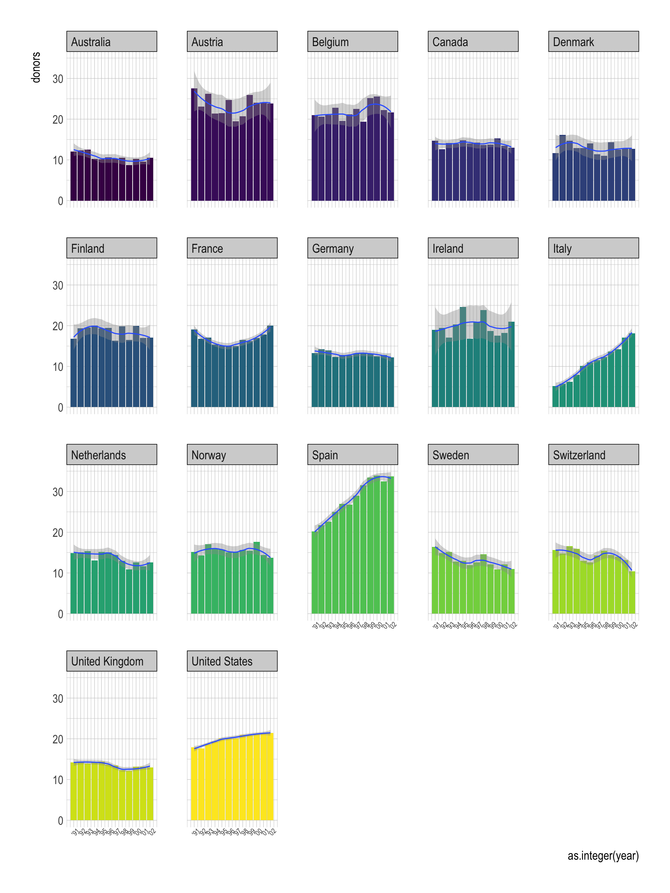
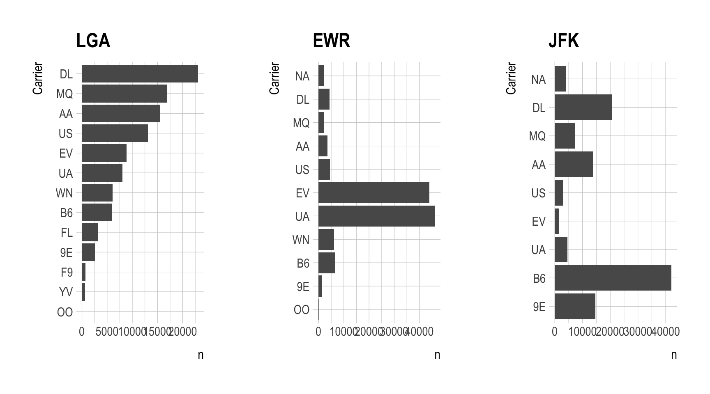

ggplot(data = mpg,
mapping = aes(x = displ, y = hwy,
color = drv)) +
geom_point(alpha = .4) +
geom_smooth(se = FALSE)
The Layered Grammar of Graphics
Run this code in your head and predict what the output will look like. Then, run the code in R and check your predictions.
ggplot(data = mpg,
mapping = aes(x = displ, y = hwy,
color = drv)) +
geom_point(alpha = .4) +
geom_smooth(se = FALSE)
ggplot(data = mpg,
mapping = aes(x = displ, y = hwy,
color = drv)) +
geom_point(alpha = .4) +
geom_smooth()What does show.legend = FALSE do? What happens if you remove it? Why do you think I used it earlier in the lecture?
Answer:
ggplot(data = mpg) +
geom_point(mapping = aes(x = displ, y = hwy,
color = drv),
alpha = .5,
show.legend = FALSE)Recreate the R code necessary to generate the following graphs.
organdata_simple to visualize the yearly trend of the variable donors for each country.organdata_simple <- read_csv('https://bcdanl.github.io/data/organdata_simple.csv')organdata_simple |>
ggplot(aes(x = as.integer(year), y = donors)) +
geom_line(aes(color = country),
show.legend = F) +
geom_point(size = .75) +
geom_smooth(linewidth = .5) +
scale_x_continuous(breaks = 1991:2002,
labels = str_c("'", str_sub(as.character(1991:2002), 3, 4))) +
facet_wrap(country ~ .) +
theme(axis.text.x = element_text(angle = 45,
size = rel(.75)))organdata_simple |>
ggplot(aes(x = as.integer(year), y = donors)) +
geom_col(aes(fill = country),
show.legend = F) +
geom_smooth(linewidth = .5) +
scale_x_continuous(breaks = 1991:2002,
labels = str_c("'", str_sub(as.character(1991:2002), 3, 4))) +
scale_fill_viridis_d() +
facet_wrap(country ~ .) +
theme(axis.text.x = element_text(angle = 45,
size = rel(.75)))
What does geom_col() do? How is it different to geom_bar()?
Answer:
Install the R package, nycflights13, which provides the flights data.frame.
Visualize the distribution of carrier.
Visualize how the distribution of carrier varies by origin.
Answer:
flights <- nycflights13::flights
airlines <- nycflights13::airlines
flights <- flights |>
left_join(airlines)flights |>
ggplot(aes(y = name)) +
geom_bar()flights |>
group_by(name) |>
count() |>
ggplot(aes(y = fct_reorder(name, n), x = n)) +
geom_col()flights |>
group_by(name, origin) |>
count() |>
ggplot(aes(y = fct_reorder(name, n), x = n)) +
geom_col() +
facet_wrap(origin ~ ., scales = "free_y")flights |>
group_by(name, origin) |>
count() |>
ggplot(aes(y = name, x = n)) +
geom_col() +
facet_wrap(origin ~ ., scales = "free_y", ncol = 1)df <- flights |>
group_by(name, origin) |>
count()
df |>
ggplot(aes(y = fct_reorder(name, n), x = n)) +
geom_col() +
facet_wrap(origin ~ ., scales = "free_y", ncol = 1)library(gridExtra)
df <- flights |>
group_by(carrier, origin) |>
count()
df_LGA <- df |> filter(origin == "LGA")
df_EWR <- df |> filter(origin == "EWR")
df_JFK <- df |> filter(origin == "JFK")
df_LGA <- df_LGA |>
mutate(carrier = fct_reorder(carrier, n))
levels(df_LGA$carrier) [1] "9E" "AA" "B6" "DL" "EV" "F9" "FL" "MQ" "OO" "UA" "US" "WN" "YV"p1 <- df_LGA |>
mutate(carrier = factor(carrier, levels = unique(flights$carrier))) |>
ggplot(aes(y = fct_reorder(carrier, n), x = n)) +
geom_col() +
labs(title = "LGA", y = "Carrier")
levels(fct_reorder(df_LGA$carrier, df_LGA$n)) [1] "OO" "YV" "F9" "9E" "FL" "B6" "WN" "UA" "EV" "US" "AA" "MQ" "DL"p2 <- df_EWR |>
mutate(carrier = factor(carrier, levels = unique(flights$carrier))) |>
ggplot(aes(y = factor(carrier,
levels = levels(fct_reorder(df_LGA$carrier, df_LGA$n))),
x = n)) +
geom_col() +
labs(title = "EWR", y = "Carrier")
p3 <- df_JFK |>
mutate(carrier = factor(carrier, levels = unique(flights$carrier))) |>
ggplot(aes(y = factor(carrier,
levels = levels(fct_reorder(df_LGA$carrier, df_LGA$n))),
x = n)) +
geom_col() +
labs(title = "JFK", y = "Carrier")
grid.arrange(p1,p2,p3, nrow = 1)
In our course, I do not require using for-loop. But here I just provide how can we combine tidyverse with for-loop.
Below is a manually faceted bar chart with the order referenced to LGA
library(gridExtra)
flights <- nycflights13::flights
df <- flights |>
group_by(carrier, origin) |>
count() |>
ungroup()
for (airport in unique(flights$origin)){
# data.frame for each origin airport in NYC
tmp <- df |>
filter(origin == airport) |>
select(-origin)
# Check for missing levels
missing_levels <- setdiff(unique(flights$carrier), tmp$carrier)
# If there are missing levels, add an observation for each
if (length(missing_levels) > 0) {
for (item in missing_levels) {
tmp <- tmp |>
add_row(n = 0, carrier = item)
}
}
# Assign tmp to df_airport
assign(paste0('df_', airport),
tmp)
}
p1 <- df_LGA |>
ggplot(aes(y = fct_reorder(carrier, n), x = n)) +
geom_col() +
labs(title = "LGA", y = "Carrier")
levels(fct_reorder(df_LGA$carrier, df_LGA$n)) [1] "AS" "HA" "VX" "OO" "YV" "F9" "9E" "FL" "B6" "WN" "UA" "EV" "US" "AA" "MQ"
[16] "DL"p2 <- df_EWR |>
ggplot(aes(y = factor(carrier,
levels = levels(fct_reorder(df_LGA$carrier, df_LGA$n))),
x = n)) +
geom_col() +
labs(title = "EWR", y = "")
p3 <- df_JFK |>
ggplot(aes(y = factor(carrier,
levels = levels(fct_reorder(df_LGA$carrier, df_LGA$n))),
x = n)) +
geom_col() +
labs(title = "JFK", y = "")
grid.arrange(p1,p2,p3, nrow = 1)